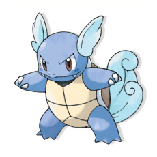
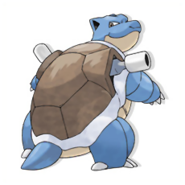
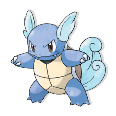
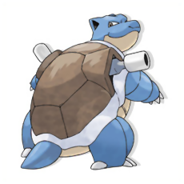
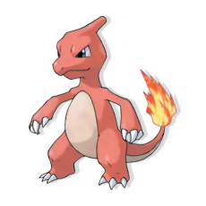
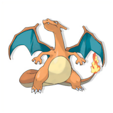
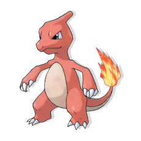
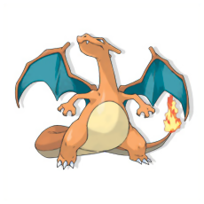

Bulbasaur es un Pokémon de tipo planta/veneno.

Charmander es un Pokémon de tipo fuego.

Squirtle es un Pokémon de tipo agua.
Pokémons Principales Primera Generación de Kanto
Bulbasaur es un Pokémon de tipo planta/veneno.
Charmander es un Pokémon de tipo fuego.
Squirtle es un Pokémon de tipo agua.
Pokémons Principales de Kanto y sus Evoluciones
 



 


